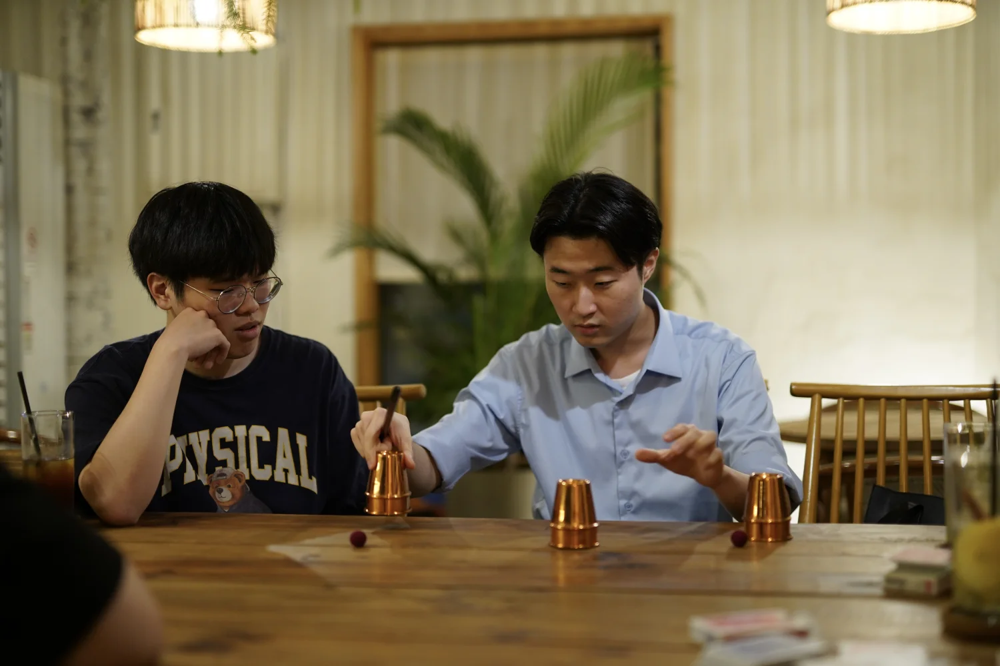
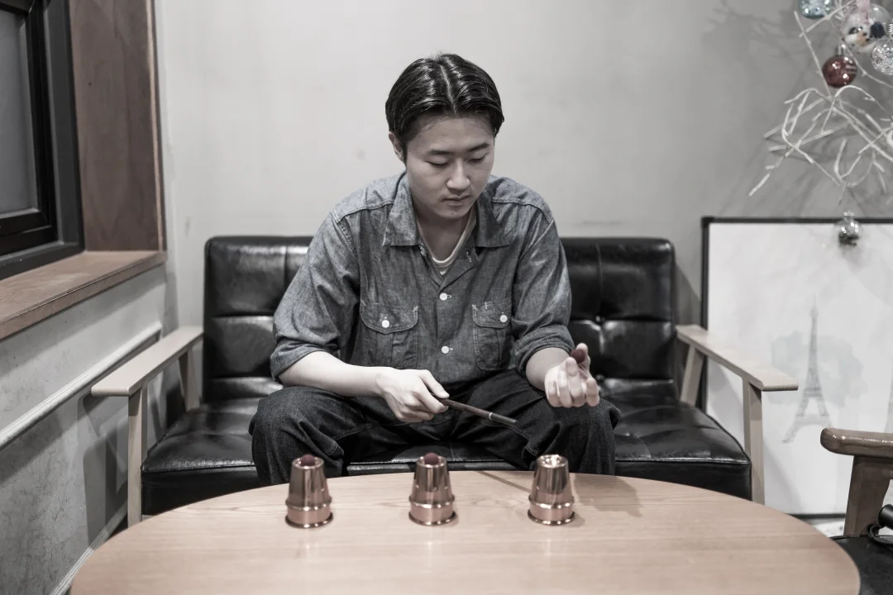
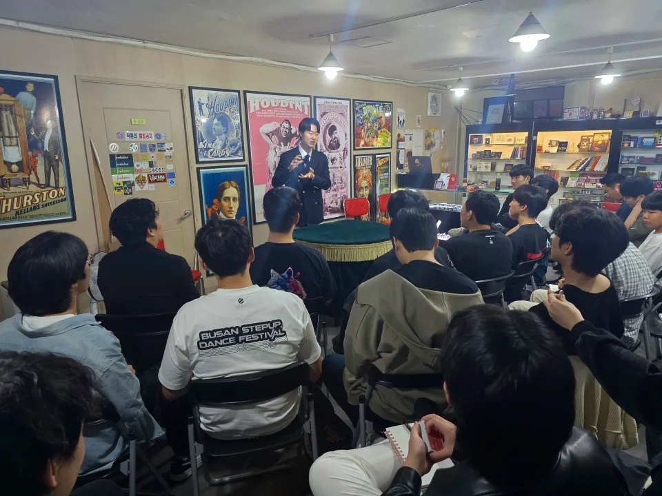
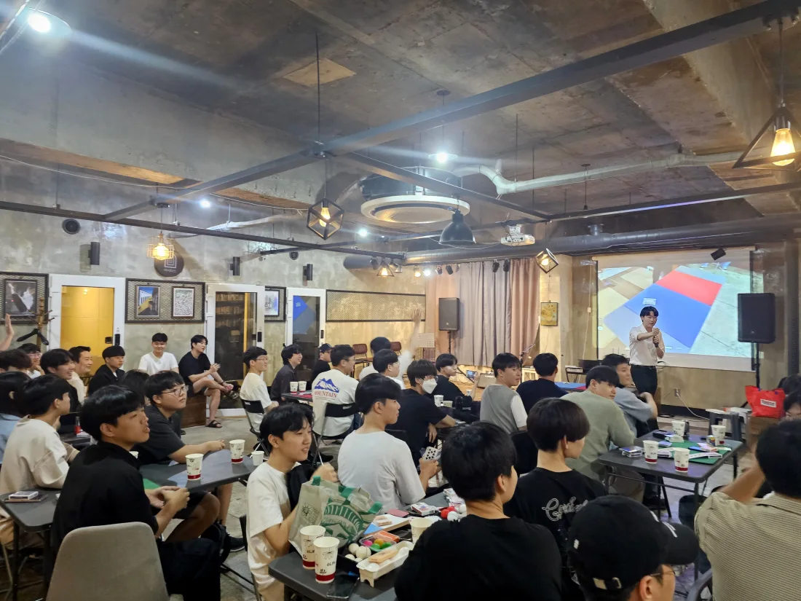

- 날짜
- 시간
- -
- 강사
- 문준영
- 주최
- 플랜비
- 장소
- 렉쳐노트 퍼블리싱 서울 동작구 남부순환로 2043 지하 1층 네이버 지도 보기

왜 입문 클래스를
열게 됐나요?
컵 앤 볼 심화 클래스를 열었을 때,
컵 앤 볼을 잘 몰라 신청하지 못했다는 분들이 있었어요.
심화 클래스에 오신 분 중에도
기본기를 아직 익히지 못한 분들이 계셨고요.
그래서 문준영 강사가
기초부터 시작하는 자리를 마련했어요.
컵 앤 볼을 처음 접하는 분도,
기본기를 다시 다지고 싶은 분도 함께할 수 있어요.
수업에서 배우는 내용
컵과 공을 꺼내 관객에게 처음 보여주는 동작부터
시작하는 컵 앤 볼 입문 클래스입니다.
다이 버논의 언더 컵 루틴을 따라
공이 사라졌다가
컵 아래에 나타나는 방법과
그 장면을 설계하는 이론을 함께 배웁니다.
손과 컵의 위치, 동작을 잇는 타이밍,
관객의 시선 처리까지 짚고,
마지막에 컵 아래에서 큰 물체를 드러내는
파이널 로드로 루틴을 완성합니다.
다이 버논의 컵 앤 볼
다이 버논(Dai Vernon)은
캐나다 오타와에서 태어난 마술사로,
‘프로페서(The Professor)’라는 별명으로 알려졌습니다.
버논의 컵 앤 볼 루틴은 루이스 갠슨의 1957년 저서
The Dai Vernon Book of Magic의
‘The Cups and Balls’ 장에 실려 있습니다.
마술사 로베르트 지오비는
The Dai Vernon Cups & Balls에서
이 루틴을 분석합니다.
시작에 빈 컵을 보여주는 동작이
마지막에 컵 아래에서 큰 물체가 나타나는 장면의
놀라움을 키운다고 설명합니다.
지오비는 동선 처리, 파이널 로드의 순서, 전체 구성도
후대의 컵 앤 볼에 영향을 주었다고 평가합니다.
문준영 강사는 다이 버논의 언더 컵 루틴을
베이스로 강의합니다.
마술사들이 말하는 버논과 그의 루틴
제 생각에 컵 앤 볼을 예술적으로 해석할 때
다이 버논의 루틴은 여전히 본보기입니다.When it comes to the artistic interpretation of C&B
Dai Vernon’s routine remains the template,
in my opinion.
Magic Advent Calendar – DECEMBER 9,
RobertoGiobbi.com (2020)
대중음악에 엘비스 프레슬리가 있었다면
마술에는 버논이 있었습니다.
진정한 전설이었죠.He was to magic what Elvis Presley was
to popular music, a true legend
Dai Vernon; Helped Found Magic Castle,
Los Angeles Times (1992)
그가 마술하는 모습을
한 번도 본 적이 없었더라도,
제게는 여태 만난 사람 중
가장 놀라운 사람으로 남았을 겁니다.If I had never seen him do magic
he'd be the most remarkable person I ever met
Ricky Jay Remembers Mentor Dai Vernon,
PBS American Masters (2015)
어쩌면 역대 가장 영향력 있는 마술사
perhaps the most influential magician of all time
Appropriating Culture, Magicana (2016)
공연과 수업 현장



